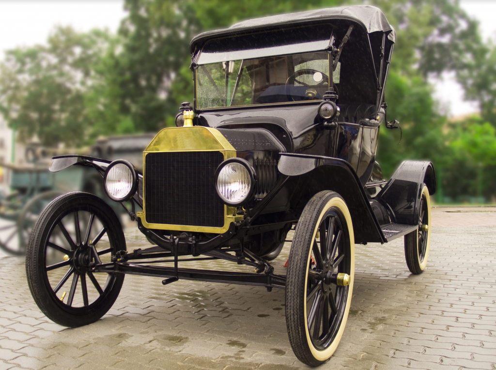
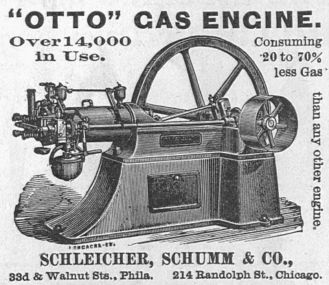

Gépjárművek
Története

A ma legelterjedtebb elven működő, azaz a négyütemű benzinmotor első verzióját Nikolaus Otto nevéhez jegyzi az autóstörténelem, az első négyütemű dízelmotor Rudolf Diesel vívmánya. A hidrogéncellás technológia, amely a benzin- és a dízelüzemű motorokat hivatott felváltani, a kezdetekben Christian Friedrich Schönbeinhez köthető, és 1838-ra kell visszanézni hozzá. Az elektromotorok terén nagy szerepet játszott Jedlik Ányos és Gaston Planté, utóbbi úriember nevéhez az ólom-savas akkumulátort is jegyezzük.
1885-ben Karl Benz kifejlesztette a benzin- vagy dízelhajtású automobilt, amelyet már gyártásba lehetett küldeni, mert olyan technológiát használt, amelynek „könnyű” volt az összeszerelése. Ez a modell még csupán egyetlen hengerrel dolgozott, de már négyütemű volt. 1896-ban Henry Ford már megépítette első járművét, a legendás T-modell, azaz a tényleges személyautó-gyártás azonban csak 1903-ra rajzolódott ki szemei előtt.Bővebben
Otto-motor

Az Otto-motor az első megvalósított négyütemű belső égésű motor, amelyet Nikolaus August Otto készített 1876-ban. Világviszonylatban ez a belső égésű motor terjedt el leginkább, és üzemanyaga, a benzin miatt hívják sokkal inkább benzinmotornak. Bővebben